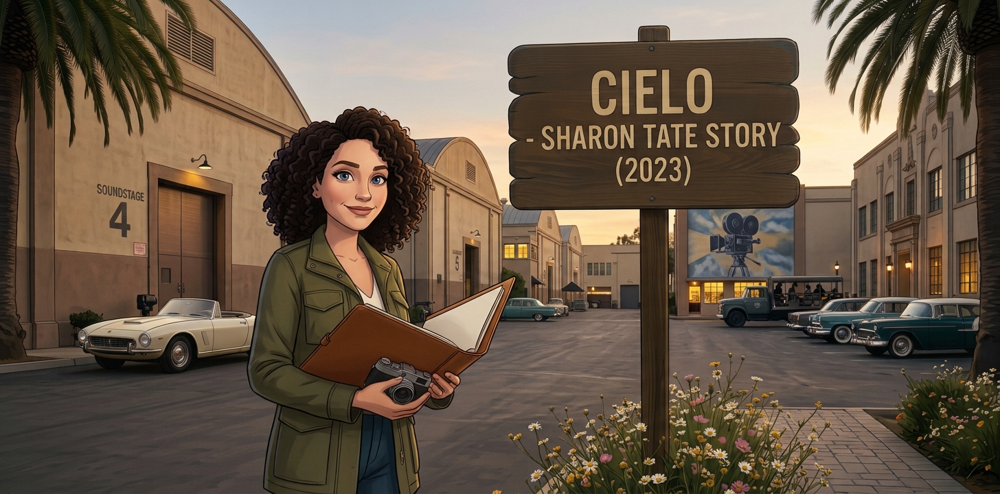
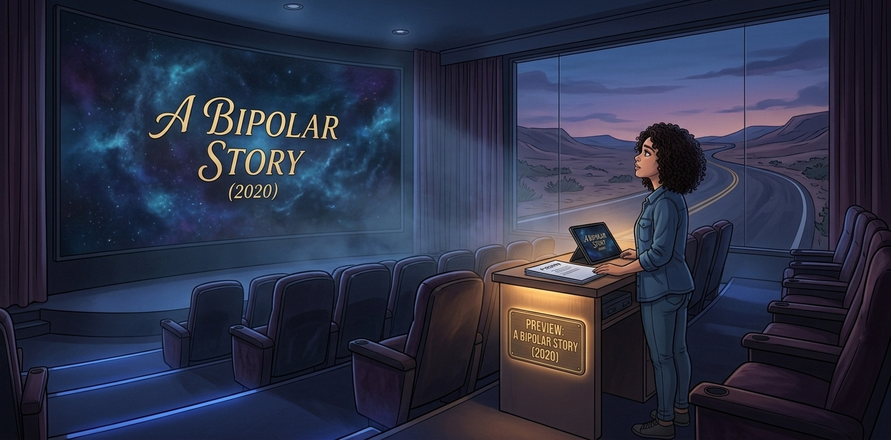

Film Production Projects
Participated in key film production projects, ensuring successful coordination across budgeting, scheduling, script development, and on-set operations.

Producer | CSULB Project
"Cielo - Sharon Tate Story" (2023)
- Facilitated and supervised the entire movie production process, including budgeting and scheduling
- Assisted with script selection, storyboard, casting, film shooting, and evaluation of final edits

Assistant Producer | El Camino Community College Project
"A Bipolar Story" (2020)
- Collaborated with the storyboard, casting, location scouting, and script revisions
- Supported cast and producer with miscellaneous tasks on set
- Assisted with sound and lighting as needed (stringing cords, working with gaffing tape, slating, etc.)
Other Film Projects

"The Skin Walker" | Feature Film Pitch Deck
Based on the historical aftermath of the Jonestown massacre, The Skin Walker is a supernatural horror-thriller following a military base maintenance worker who must confront the vengeful, murderous spirit of cult leader Jim Jones.
When the bodies of the Jonestown victims are temporarily stored at Fort MacArthur, the base becomes ground zero for a malicious haunting. Decades later, as a series of gruesome "accidental" deaths claims his maintenance crew, a worker must team up with real-world paranormal investigators and a Jesuit priest to exorcise the evil entity before it destroys his life and livelihood.
- Logline & Synopsis:A high-concept, grounded horror narrative blending true-crime history with intense supernatural stakes.
- Producer's Statement:Outlines the creative vision and thematic depth of the project.
- Character Breakdown:Profiles the central and supporting characters driving the emotional and physical conflict of the story.
- Locations & Production Scale:Explores the atmospheric settings, focusing on the historical infrastructure of Fort MacArthur.
- Business Strategy:A comprehensive roadmap detailing the funding structure, distribution strategy, and marketing social strategy.
Skills

Technical Tools
- Final Draft
- Microsoft Office and Google Suite
- Movie Magic Budgeting and Scheduling
- Pitch Presentation Design using Canva
Professional Expertise
- Production Management Expertise
- Detail-Oriented
- Script Writing
- Storyboard Collaboration
- Video and Film Production Projects
- Collegial and Active Listener
- Purpose-Driven Approach
- Solution-Oriented
- Screenplay Analysis
- Teamwork and Collaboration Skills
Education
California State University Long Beach (CSULB) ǀ Long Beach, CA
Bachelor of Arts Degree in Film, Emphasis in Production Management - 2023
El Camino Community College ǀ Torrance, CA
Associate of Arts Degree in Film/Video - 2020